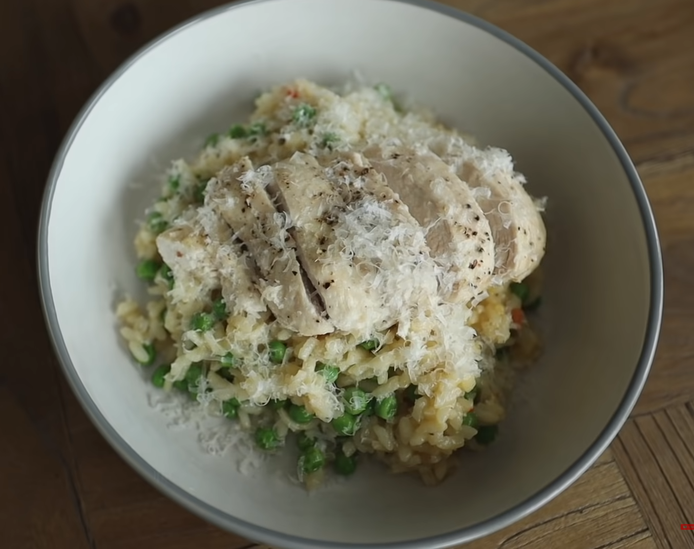

Here I'll be presenting some various high protien meals that
I've personally enjoyed making that I've found on the internet!
No matter what your goal is (muscle growth or weight loss) these
recipes will definitly help you out with reaching those daily protien,
carbohydrates and fat macronutrients easily by following these quick and
easy recipes! All you need is five different ingredients and a small amount of time and
you'll be able to create some amazing dishes that can fullfill your daily
macronutrients goals!!
Sweet Soy Chicken Noodles
Ingredients
Chicken
Kicap Manis
Egg Noodles
Broccoli
Egg
Preperation
Step 1
Chop up the chicken with a cutting board and place it aside.
Step 2
Heat the pan and pour in oil(perferably sesami oil).
Step 3
Place all the chicken into the pan and fry it.
Step 4
Chop broccoli and add it to the pan.
Step 5
Cook the noodles as per instruction on the packet then add it to the pan.
Step 6
Then add kicap manis to the pan and give it a good mix.
Step 7
Add a little oil then crack an egg to the pan and scramble it and mix it all together.
Step 8
Finally place the food on a dish and enjoy!
Follow the video
Nutrition
Calories
Protien
Carbohydrates
Fats
786 Calories
68g
73g
20g
Chicken & Pea Risotto

Ingredients
Chicken
Garden Peas
Parmesan cheese
Veg stock
Risotto rice
Preperation
Step 1
Place the chicken in a tray, add some oil and seasoning and stick it into a preheated oven at 180 degrees.
Step 2
Place 125 grams of risotto rice into a pan and turn the stove on and add some oil and give it a mix.
Step 3
After a few minutes of the rice heating up, add the veg stock slowly until the rosotto is all cooked.
Step 4
In the meantime, grate some parmesan cheese and place it to the side.
Step 5
Once the rice is done add the peas to the pan and give it a couple minutes to heat through and finally add the parmesan cheese into the pan and give it a stir.
Step 6
Once your chicken is finished, take it out and cut them to smaller pieces.
Step 7
Place the food from the pan into a dish with the chicken and finish with the last bit of parmesan cheese and enjoy!
Follow the video
Nutrition
Calories
Protien
Carbohydrates
Fats
841 Calories
68g
73g
20g
Creamy Prawn Rigatoni
Ingredients
Prawns
Chili
Cream cheese
Rigatoni(or any pasta of choice)
Preperation
Step 1
Chop up the garlic and the chili and place them aside.
Step 2
Begin cooking 125 grams of the pasta.
Step 3
Then add some oil to a pan and add your garlic and chili to the pan. Your gonna want a nice sizzle.
Step 4
After a few minutes you can add your prawns to the pan and cook them.
Step 5
Once your pasta is all cooked, drain them and add it to the pan.
Step 6
Turn the heat down and add a nice amount of cream cheese and mix it around.
Step 7
Finally place the food into a dish and add some black pepper.
Follow the video
Nutrition
Calories
Protien
Carbohydrates
Fats
705 Calories
96g
46g
14g
Salmon & Veg Tray Bake
Ingredients
Butter
Garlic
Salmon
Potatoes
Asparagus
Preperation
Step 1
Chop up the potatoes to equal size and place them all into a bowl.
Step 2
Then add some oil, salt and pepper to your potatoes. Give it a mix and put it in a tray and into your preheatede oven at 200 degrees.
Step 3
Next we chop up some garlic and place it into a bowl along with a knob of butter. Give it a mix.
Step 4
After 15 minutes take out your potatoes out the oven. Move them to one side of the tray and place your asparagus in as well as your salmon.
Step 5
Place a lump of the garlic butter mix on top of each component of the dish in your tray and return it into the oven and give it a cook depending on the size of your salmon.
Step 6
Once the salmon is all cooked, take it out and place it into a dish and enjoy!
Follow the video
Nutrition
Calories
Protien
Carbohydrates
Fats
651 Calories
45g
49g
30g
About
I'm a student at University of Washington majoring in Computer Science.
This is my first project as an intro to learning HTML & CSS. I've decided to make a protien meal recipe
site due to my recent journey in weight training. From what I've learned
so far protien is very important when it comes to weight training which I
struggled with so I decided to make a site for easy high protien meals that
helped me out. Enjoy!